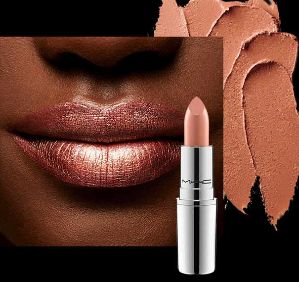
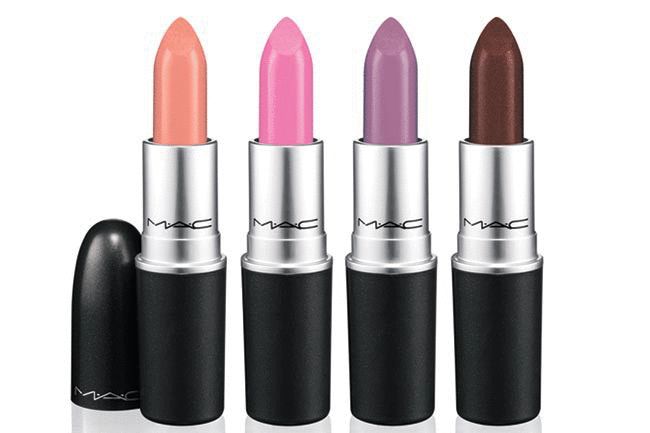

There are many types of lipsticks: glossy, creamy, matte, decorated, moisturizing, and they even come with different smells and flavors. It is known to have been used for around 5000 years in ancient Mesopotamia, when semi-precious jewels were crushed and applied to the lips and occasionally around the eyes. Women in the ancient Indus Valley applied lipstick to their lips to decorate their pretty face.
 